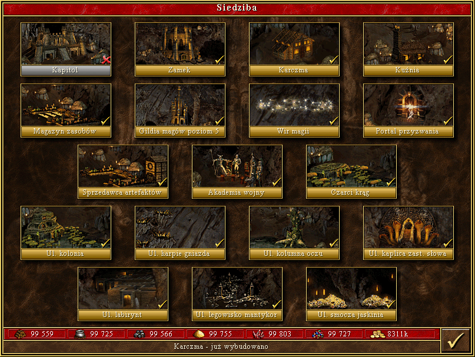

Loch - ang. Dungeon - to nowe, podziemne wcielenie bardzo potężnego zamku Czarnoksiężnika z Heroes I-II. Można tu spotkać niewielu starych bohaterów - tylko Alamara - a bardzo wiele stworów się zwyczajnie wyprowadziło do innych frakcji - wymienić tu można gargulce, centaury, hydry i gryfy. Dołączyły za to, jak dotąd neutralne, meduzy oraz stworzenia zupełnie nowe - troglodyci, harpie, mantikory oraz złe oczy.
Krainą czarnoksiężników jest Nighon [najon] - wyspa na południowy-zachód od głównego kontynentu, ale znajdująca się chyba na jego płycie - inaczej trudno byłoby sobie wyobrazić, jak mieszkańcy Nighonu wykopali olbrzymie tunele pod wyspą, a nawet pod morzem, przez które zaatakowali Erathię w Heroes III.
Początkowe walki skupiają się wokół troglodytów. To oni stanowią wtedy trzon armii. Warto szybko wybudować siedliska złych oczu i meduz. Będziemy mogli tym samym werbować dwie jednostki atakujące z dystansu. Godny uwagi jest fakt, że Lochy posiadają aż trzy oddziały latające, w tym dwa z szóstego i siódmego poziomu. Armia z tego miasta jest elastyczna. Może nacierać lub się bronić, zależnie od potrzeb. Warto dodać, że kreatury z Lochów posiadają wiele ciekawych talentów jak chociażby całkowita odporność na magię u czarnych smoków, czy też paraliż chimer. Gildia magów posiada pięć poziomów, a zaklęcia, które tam poznamy należą najczęściej do żywiołu ziemi. Interesujące są także budynki specjalne. Jeden z nich pozwala nam zwerbować jednostki z siedliska znajdującego się na mapie. Rozbudowa miasta jest niestety kosztowna. Poza standardowymi wymaganiami w złocie, rudzie i drewnie, trzeba zadbać o duże zapasy siarki.
[Źródło tekstu]
